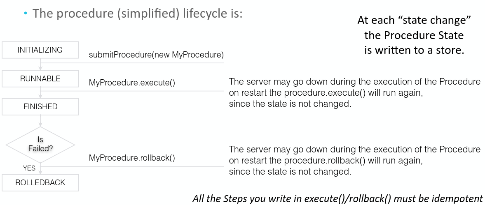
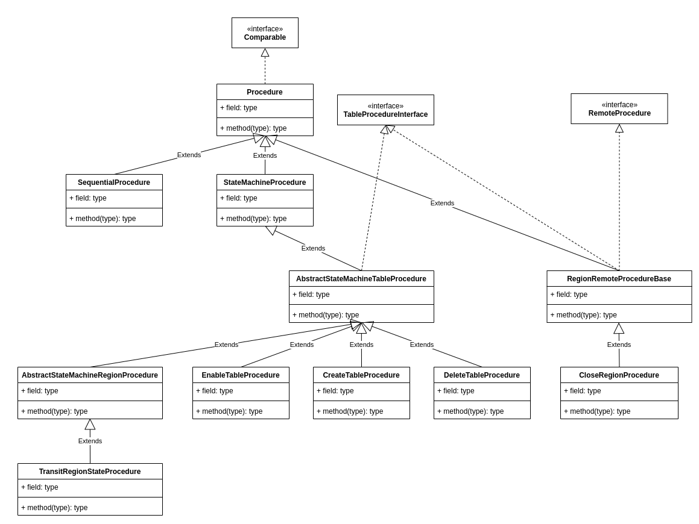
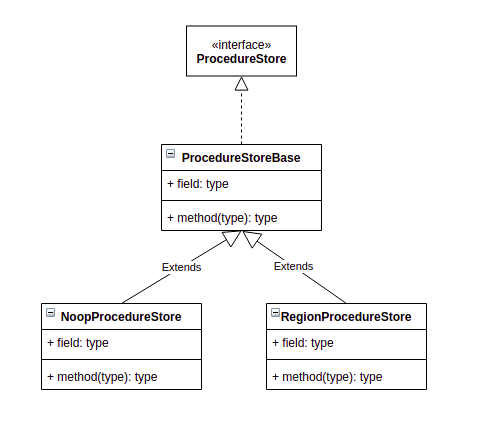
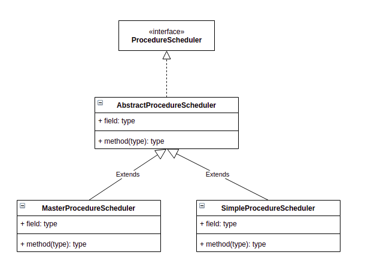
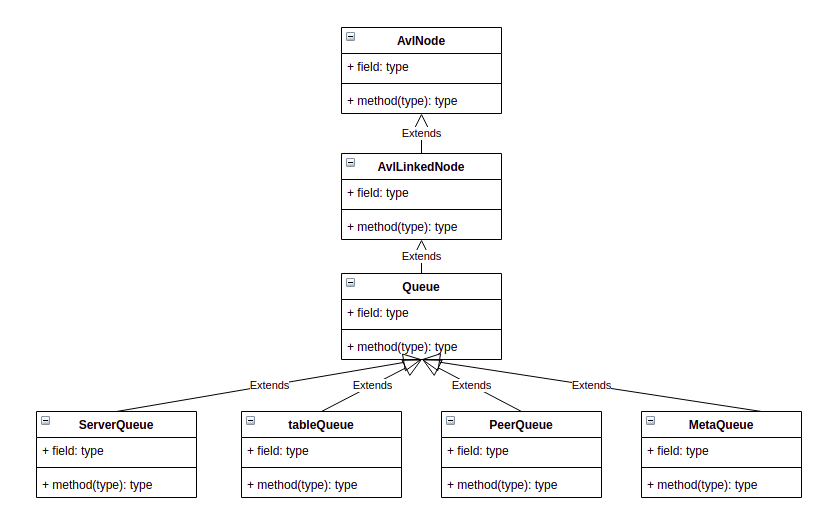
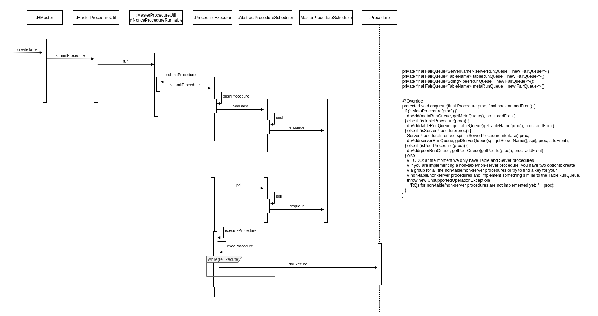

HBase Procedure v2之Procedure
Procedure类型
| 名称 | 说明 |
|---|---|
| Meta Procedure | execute(), rollback() |
| Server Procedure | 唯一的一种类型为ServerCrashProcedure，用来负责RegionServer进程故障后的处理 |
| Peer Procedure | 与Replication相关，如AddPeerProcedure, RemovePeerProcedure等等 |
| Table Procedure | 类型最为丰富，如CreateTableProcedure, DisableTableProcedure, EnableTableProcedure, AssignProcedure, SplitTableRegionProcedure, …涵盖表级别、Region级别的各类操作。 |
在ProcedureScheduler中，需要同时调度这几种类型的Procedure，调度的优先级顺序(由高到低)为：
Meta -> Server -> Peer -> Table。
Procedure状态
| 名称 | 说明 |
|---|---|
| INITIALIZING | Procedure in construction, not yet added to the executor |
| RUNNABLE | Procedure added to the executor, and ready to be executed |
| WAITING | The procedure is waiting on children to be completed |
| WAITING_TIMEOUT | The procedure is waiting a timout or an external event |
| ROLLEDBACK | The procedure failed and was rolledback |
| SUCCESS | The procedure execution is completed successfully. |
| FAILED | The procedure execution is failed, may need to rollback |
根据Procedure的生命周期，整个状态切换大概如下图所示。

Procedure的实现
Procedure的实现体系
Procedure的实现非常丰富，这里仅仅举出几个常见的Procedure的继承关系。

其中最常见的就是 StateMachineProcedure ，对于所有执行存在先后顺序，且存在状态切换的 Procedure 实现都会继承此类，同时这些 Procedure 也会定义一些自己的状态，比如MasterProcedure.proto中定义了CreateTableState，CreateTableState又进一步定义了该Procedure在调度中会存在下述定义的状态。
|
|
StateMachineProcedure使用 int[] states 数组来存储本次Procedure中所涉及到的 Procedure 状态的编号（即上面的1,2…等数字），stateCount 用来存储 states 的下标。这里有个细节提下，即便是多个 Procedure 也一定是从前往后执行，所以 states 中的最后一个表示的一定是当前 Procedure 的状态。
Procedure的主要实现方法
最简单的Procedure可以采用如下的方式（取自TestProcedureToString.java）实现。其中execute()和rollback()分别定义如何执行和回滚该Procedure操作。而serializeStateData()和descrializeStateData()则定义了如何序列化和反序列化该Procedure。
|
|
HBase Procedure v2之ProcedureExecutor
ProcedureExecutor的实现
ProcedureExecutor功能是比较单一的，实现上面也仅仅只有一个ProcedureExecutor类而已。ProcedureExecutor最核心的方法大概有init()，submitProcedure()，bypassProcedure()。init()方法主要负责完成ProcedureExecutor的初始化，并且接着将ProcedureExecutor启动起来；submitProcedure完成的功能顾名思义是将Procedure提交到ProcedureExecutor，交由其执行。bypassProcedure()并不是一个非常常规的方法，会绕过Procedure的execute()和rollback()，直接持久化Procedure。
HBase Procedure v2之ProcedureStore
ProcedureStore的实现
ProcedureStore的实现体系
ProcedureStore的实现就只有如下两种，一种是存储在内存的NoopProcedureStore，另一种是存储到HDFS的RegionProcedureStore。
注意： NoopProcedureStore说存储在内存表述也不恰当，因为它没有使用任何数据结构去承载Procedure。 RegionProcedureStore则是借用Master的自有Flush逻辑，将Procedure持久化到HDFS的MasterData目录，有点类似于Master特有的table。

ProcedureStore的主要实现方法
最简单的Procedure可以采用如下的方式（取自NoopProcedureStore.java）实现。其中start()和stop()定义了如何打开ProcedureStore，insert(), delete(), update(), load()则定义了ProcedureStore的增删改查。
|
|
HBase Procedure v2之Scheduler
Scheduler的实现体系
Scheduler的实现总共两种，而SimpleProcedureScheduler几乎处于废弃的状态。 MasterProcedureScheduler 与其说调度，倒不如说是维护四种与Procedure类型对应的的队列入队与出队。 注意，这个队列本质上是个完全平衡二叉树，而不是个普通的链表。而且这些队列自身并没有任何并发访问控制，在入队和出队的时候，需要先获取schedulerLock（使用ReentrantLock实现），然后才能进行操作。

每种Procedure被提交时，最终都会存储到对应的Procedure的队列中。
|
|

HBase Procedure 的执行流程

Procedure的执行流程还是比较清晰的，以建表为例，当在客户端输入 create 't', 'f1'的时候，接着该请求会被发送到HMaster，HMaster接收到请求后，通过该请求参数构造成对应的Procedure(CreateTableProcedure)，然后借助MasterProcedureUtil工具将其提交到ProcedureExecutor，ProcedureExecutor接收到该Procedure之后，将其提交到MasterProcedureScheduler，接着由MasterProcedureScheduler将其插入CreateTableProcedure对应的队列(tableRunQueue)中。
因为ProcedureExecutor维护了一个WorkerThread线程池，该线程池在HMaster启动的时候，完成初始化并将其启动，当向由MasterProcedureScheduler中的队列插入Procedure后，该线程池中的WorkerThread发现（while循环不断尝试发现）队列中插入了Procedure，会将其取出来（因为获取队列Procedure之前，会先尝试获取chedulerLock，所以完全不用担心多个线程同时获取到同一个Procedure），根据Procedure中定义的execute()方法执行具体步骤。